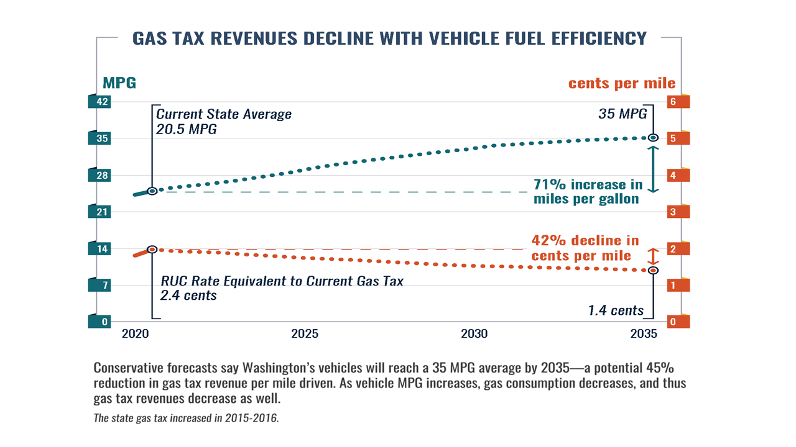

FAQs
What is a road usage charge?
A road usage charge is a per-mile charge drivers would pay based on how much they use Washington’s road system rather than pay by the gallons of gas they buy. This approach is similar to how people pay for their utilities, including electricity or water.
Why is a RUC needed?
To ensure sustainable, long-term funding. As more and more vehicles on Washington’s roads get better gas mileage, or don’t use gas at all, gas tax revenues will decline. Washington State has a goal to ban gas-powered cars by 2030, and under current regulations by 2035, all new vehicles must be Plug-in Hybrid Electric Vehicles (PHEV) or Zero Emission Vehicles (ZEV). This means that by 2035, the state is anticipated to see a potential 45% reduction in essential road, bridge and ferry maintenance revenue currently funded by the gas tax. Enacting a RUC now means that our state will be prepared for this transition and will we able to sustain needed transportation revenues to maintain and protect our roads.
A road usage charge would provide a more stable source of transportation funding than the gas tax, since drivers would pay by the mile instead of by the gallon.
To ensure everyone pays their fair share: Considering the range of MPG of today’s vehicles on the road, the gas tax has become less fair for drivers of older and less fuel efficient vehicles. For the same miles driven, drivers pay widely different amounts for their roadway use, depending on their vehicle’s MPG. This inequity is expected to grow each year as vehicle MPG continues to increase, and more and more cars on the road are hybrid or all-electric.
Will this be an additional tax?
No, the road usage charge is being considered as a replacement to the gas tax, not on top of or in addition to the gas tax. In Washington, a transition to a gas tax would be gradual – more like a dial than a switch. Drivers of electric and hybrid vehicles would be the first to use a road usage charge in Washington. During this gradual transition, no drivers would ever be taxed twice – they would only pay either a RUC or the gas tax.
When drivers can pay a RUC but the gas tax is still in place, how will I be reimbursed for the gas tax that is paid at the pump?
Gas taxes paid at the pump will be a pre-payment or credit towards one’s road usage charges. Because of this, the remaining RUC charges due will likely be very small.
What will the per mile RUC rate be?
The Legislature will set the RUC rate and will likely work from the current equivalent rate that drivers pay today if they drive a car that gets our state’s average vehicle fuel efficiency of 21 mpg, which is 2.5 cents per mile.
How much would a road usage charge cost me each year?
Assuming the average vehicle per year travels 12,000 miles or a 1,000 miles traveled per month, using the gas tax equivalent rate of 2.4 cents-per-mile, this equates to a total of $24 per month, or $288 annually. Currently, drivers pay an average of $289.17 a year under the gas tax, nothing that all gas taxes paid would be credited towards your RUC charges in a future RUC system.

Actual RUC charges will vary by the type of vehicle you drive:
- Less fuel-efficient vehicles will see a decrease in the amount of taxes paid.
- More fuel-efficient vehicles will see an increase in the amount of taxes paid.
- The total effect is that all drivers pay the same rate to use the roads – regardless of their vehicle’s MPG.

While RUC does result in drivers of fuel-efficient vehicles paying a little more in taxes for transportation as compared to the gas tax, the overall cost advantage of owning a fuel efficient, hybrid, or EV remains significant. For example, under RUC, owners of a Prius will pay $210 dollars per month less than the Ford pickup truck driver.
Would rural drivers, who tend to drive further to access needed services and amenities, pay less with a RUC system than the gas tax?
Given the cost impact of RUC compared to the gas tax, will be determined by your car’s MPG, rather than the miles driven, two key findings emerge:
These findings are supported by two studies that looked at Washington state and the Western U.S. around whether a potential transition from the gas tax to a RUC would disproportionately affect rural households. Some key findings:
- Rural residents tend to drive less fuel-efficient vehicles, which increases the amount of gas taxes they pay.
- Rural drivers tend to travel longer distances per trip, but also tend to make less frequent trips than urban drivers.
- In Washington, rural households are estimated to pay 4.8% less under a RUC system, and urban households are estimated to pay 1.0% more in transportation taxes under a RUC system compared with the current gas tax.
What happens if I drive out of state?
As long as the gas tax continues to be collected in states, nothing will change when you travel out of state, nor will it change for visitors coming to Washington State. Drivers will be able to fill up and pay the gas tax that goes to support the roads, just like we do today in all states.
In the future, when the gas tax is removed, travel location around if you are in state and on a public road will become more important. Technology solves this problem via the use of GPS. Approaches using GPS were tested in the Washington State pilot in 2018-19, for the sole purpose of confirming miles driven were in-state and on public roads. The State of Washington did not take possession of nor store specific location data. Only the total number of miles driven in the state and on public roads was recorded.
Can miles be reported without using GPS data?
Yes – Washington has tested multiple options for recording RUC mileage that do not rely on collecting location/ GPS data. Viable approaches include:
- A mileage permit where drivers can pre-pay for a block of miles
- An odometer reading where drivers would report their odometer at the time of their vehicle’s registration renewa
- A plug-in device or a smartphone app that do not use GPS, essentially resulting in your total miles driven being collected and sent in via an automated system
If a RUC program is implemented, will the per-mile rate be adjusted based on vehicle weight?
This will be a Legislative decision. Currently, highways are designed to support heavy vehicles over 30,000 pounds, and these heavy vehicles currently pay hefty weight fees to compensate for their impact. Given this, a RUC rate based upon weight is not a necessity.
Does RUC disincentivize EV ownership?
No. Even when paying a RUC, the annual costs of owning and operating an EV will continue to be significantly lower than the cost to own and operate a gas-powered vehicle. A RUC system would also replace the current flat annual fees for hybrids and EVs.
How does RUC fit with Washington State’s climate policies?
RUC harmonizes transportation funding needs with our state’s climate policy objectives by ensuring that Washington can maintain and preserve funding for roads, bridges, and infrastructure, without depending on taxes from fossil fuels.
Did the gas tax just get raised?
Washington’s gas tax was last raised in 2016 to 49.4 cents per gallon. In 2022, Washington passed the Climate Commitment Act to curb carbon emissions establishes a comprehensive, market-based program to reduce carbon pollution and achieve the greenhouse gas limits set in state law. This law went into effect in January 2023 and does not raise the current gas tax.
A chart from a June 2022 memo by the Washington Research Council, a free-market policy nonprofit, showed that the Climate Commitment Act cap-and-invest program could result in an increase in compliance costs of 46.6 cents per gallon in 2023. However, the chart itself states that the data should not be used to forecast fuel prices. Despite this disclaimer, the 46-cent figure has been repeatedy by other groups. It has sometimes been incorrectly cited as an official Department of Ecology estimate. This figure does not reflect Ecology’s analysis and it appears to be based on narrow, oversimplified assumptions.
Ecology’s analysis predicts minimal price impacts to the price of gas in 2023 and very modest impacts in future years. These are not “best case” outcomes. The impacts remain small when we evaluated them under a range of potential market scenarios.